executed요청·응답 목록실제 HTTP 89건 수집수신 89 · 처리 오류 0http://127.0.0.1:24904/실제 서버 body와 정규화한 HTTP 헤더를 사용했습니다. TCP 원시 프레이밍 캡처는 아닙니다.traffic.json · transport-index.json · original-id-index.json실제 결과 화면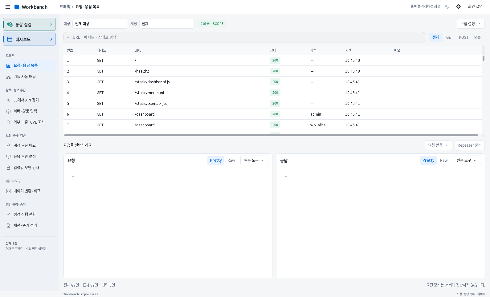
executed기능 자동 매핑관측 135항목 → 43개 기능 그룹Check account balanceAdmin panel서비스·정적 자료·상태 확인 등 실제 관측을 묶음같은 실제 응답을 일반 수집과 Scope handoff에서 다시 관측할 수 있습니다. 135항목은 독립 HTTP 요청 수가 아닙니다.mapper-final.json · measurement-stages.json실제 결과 화면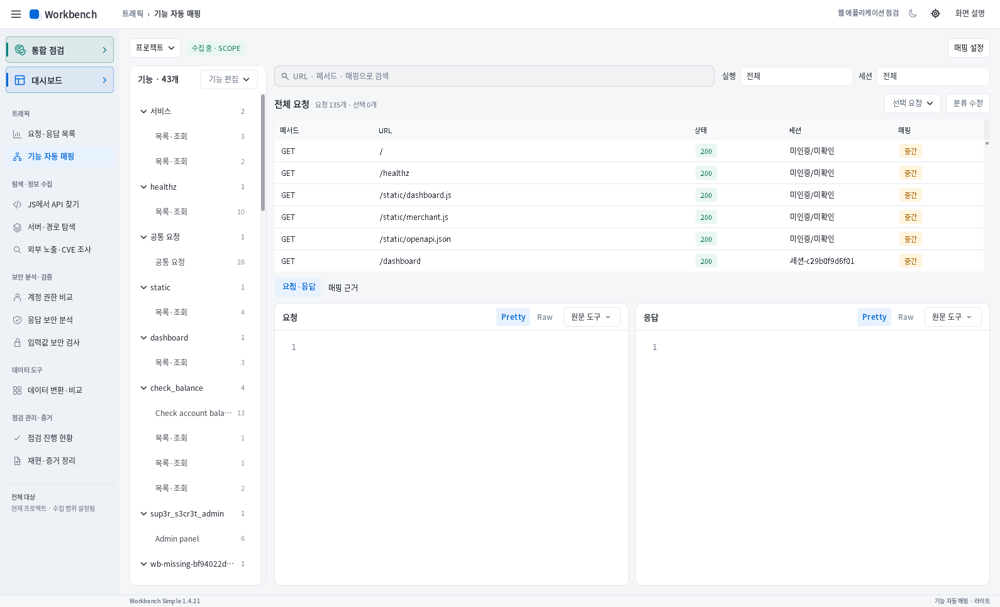
executed계정 권한 비교잔액 조회에서 우회 의심 2개 인증 조건http://127.0.0.1:24904/check_balance/1791279111wb_bob, anonymous → HTTP 200, 타인 계좌 표식 관측정상 대조: 관리자 화면 admin 200 / Alice·Bob 403 / 비로그인 401제품의 SUSPECT 판정과 정책 대조 결과입니다. 독립 검증에서도 무인증 잔액 노출을 확인했습니다. 기존 기준 계정 캡션 문제는 별도 기록했습니다.auth-comparisons.json · groundtruth.json · product-observations.md실제 결과 화면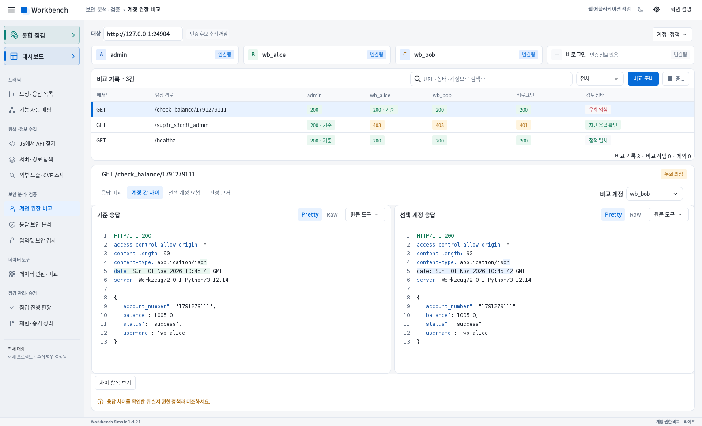
executedJS에서 API 찾기60개 소스 · 304개 후보 행 · URL 문자열 217개dashboard.js 19 / merchant.js 7 / OpenAPI 42/transfer · /request_loan · /api/virtual-cards 등의 경로 후보중복·동적 경로와 미완성 후보를 포함합니다. URL 수는 호출 가능한 API 수가 아닙니다. dashboard.js는 AST 실패 후 보조 패턴 분석으로 19개를 찾았습니다.js-analysis-final.json실제 결과 화면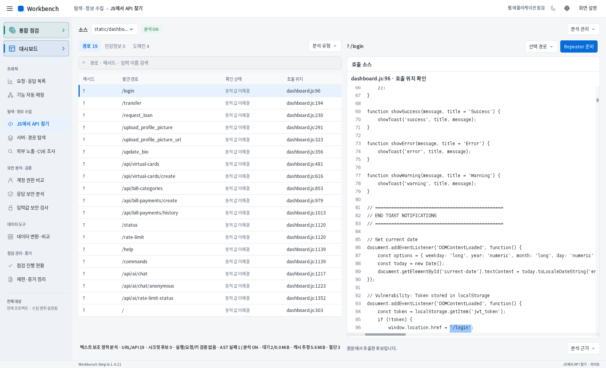
executed서버·경로 탐색Flask / Werkzeug · Swagger / OpenAPI · GraphQL 단서/healthz → 200 / JSON/wb-bank-missing-1421 → 404 / MISSING/static/openapi.json → 200 / OPENAPI/.env → 200 / ENV헤더·본문·응답 구조에 근거한 구성 추정입니다. /.env는 실제 HTTP 200의 실습용 환경 설정 노출입니다.environment-final.json · path-results.json실제 결과 화면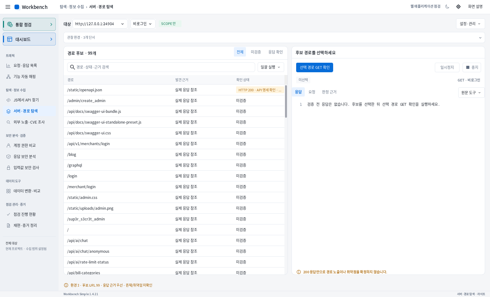
executed응답 보안 분석5개 현재 분석 항목HTML 응답 헤더 검토설정 키 노출 후보오류 구현 정보 노출 후보응답 분석 범위 제한SQL 구문 오류·DB_PASSWORD 키·헤더 미관측은 검토 후보입니다. 일부 큰 JS 본문은 앞 1,048,576자만 분석해 범위 제한을 함께 남겼습니다.response-findings.json · sql-error.json실제 결과 화면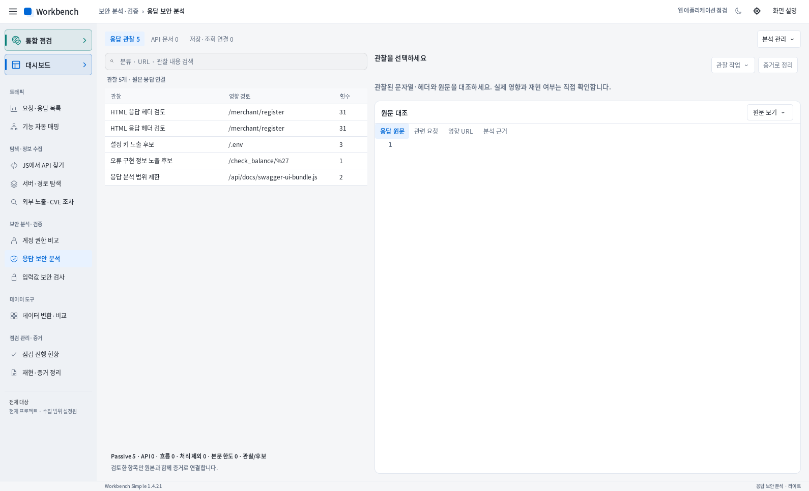
executed입력값 보안 검사5회 제한 실행 · SQL 조건 차이 후보 1개기준 200 → 참 조건 200 → 거짓 조건 404기준·거짓 조건을 각각 재검증완료 · 총 5회 / 페이로드 2개 · 검사 목록 완료제품은 WAF·일반 필터 가능성을 포함해 후보로 표시합니다. 독립 SQL 로그인 우회 확인과 같은 결과로 합치지 않습니다.payload-sql.json · groundtruth.json실제 결과 화면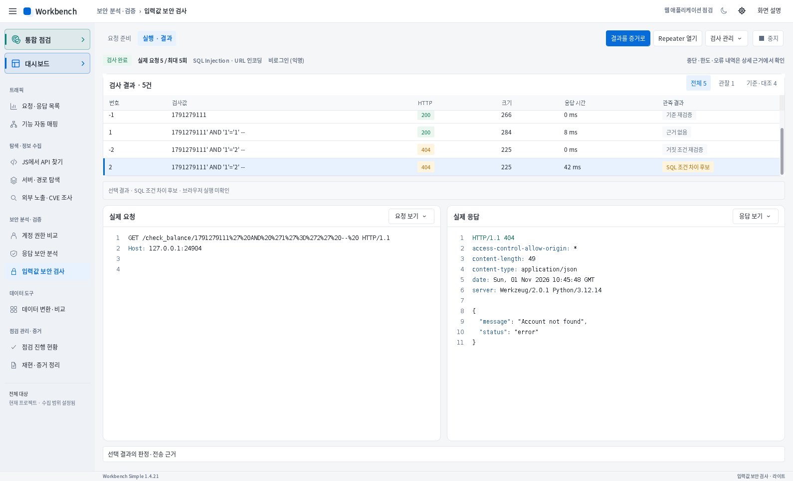
partial재현·증거 정리순차 요청·변수 추출·증거 ZIP 및 음수 이체 재현별도 실제 workflow 5단계 · 금액 -5Alice 1000 → 1005 / Bob 1000 → 995가림 증거 ZIP 1개 생성 · 계정/업무 자동 연결은 미완료제품 출력은 설정한 HTTP 기대 조건 일치입니다. 잔액 숫자 변화로 음수 이체의 업무 규칙 위반을 별도로 확인했습니다. 익명 자료의 자동 증거 연결 오류를 숨기지 않았습니다.workflow.json · business-negative-transfer.json · redacted-evidence.zip · product-observations.md실제 결과 화면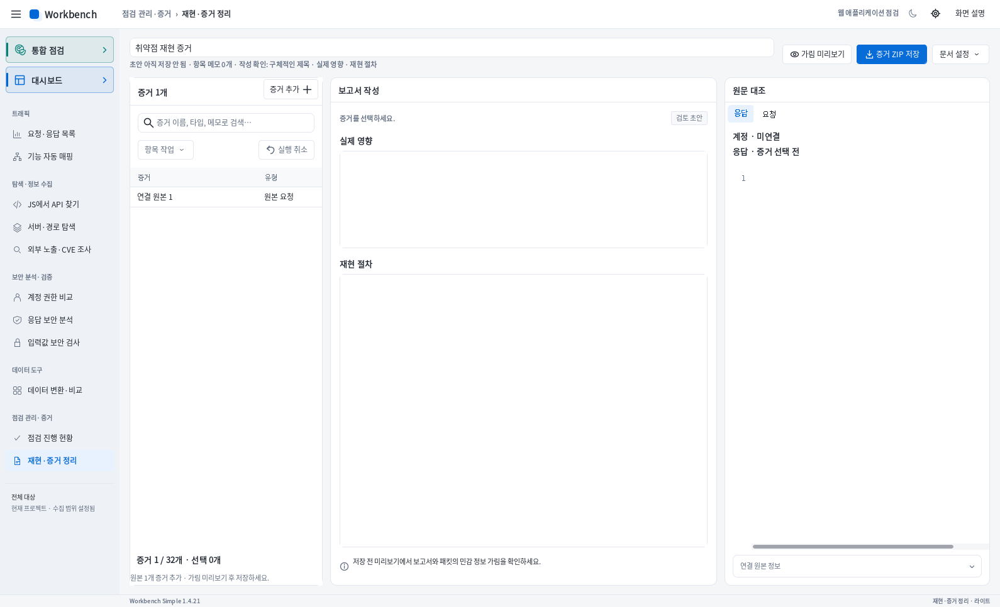
executed데이터 변환·비교실제 계좌 응답 변경 구간 3개 · JWT 내용 해석Alice·Bob의 실제 잔액/사용자명/계좌 응답 비교실제 JWT: HS256 · is_admin=false · exp 없음서명 검증은 수행하지 않음변경 구간은 필드 수나 취약점 수가 아닙니다. JWT 디코딩 결과와 독립적인 서버 변조 수용 시험을 구분합니다.structured-comparison.json · jwt-analysis.json · groundtruth.json실제 결과 화면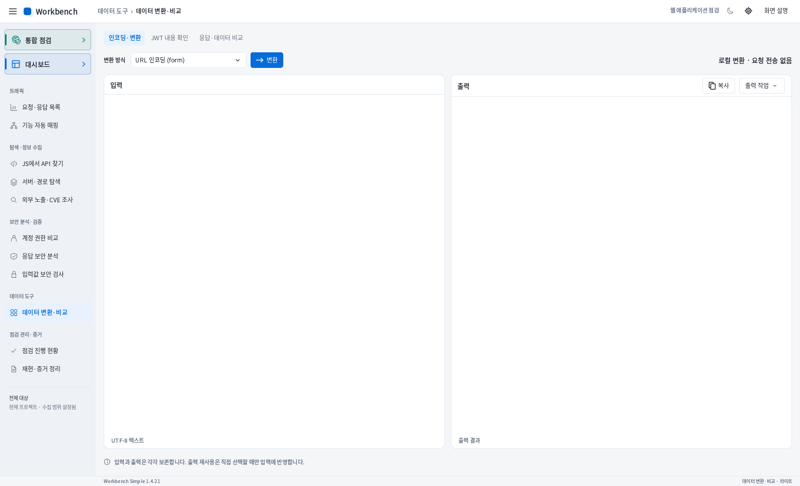
executed점검 진행 현황관측·발견 경로 91항목 관리관측과 미관측, 파라미터·재검토·수동 완료 상태GET /는 하네스에서 직접 확인 후 완료 표시후보/동적 경로가 포함되며 이 개수는 점검 완료 수가 아닙니다.activity-final.json · activity.json실제 결과 화면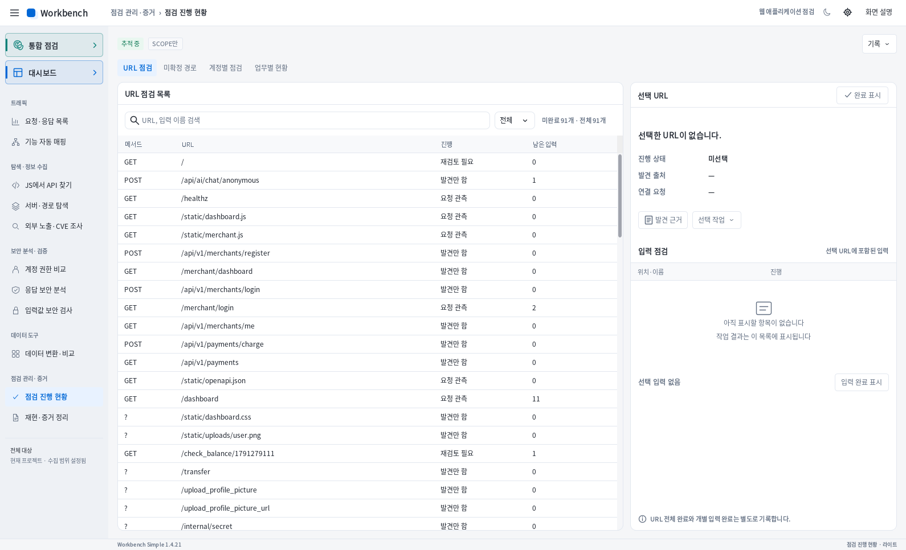
not-run외부 노출·CVE 조사검색식 생성 · 외부 조회 미실행site:127.0.0.1 (inurl:swagger OR inurl:api-docs OR inurl:openapi)외부 공급자 API / Google / CVE 조회: NOT_RUNCVE 0행은 안전하다는 판정이 아닙니다. 로컬 은행만 시험했으며 외부 조회는 하지 않았습니다.exposure-research-final.json실제 결과 화면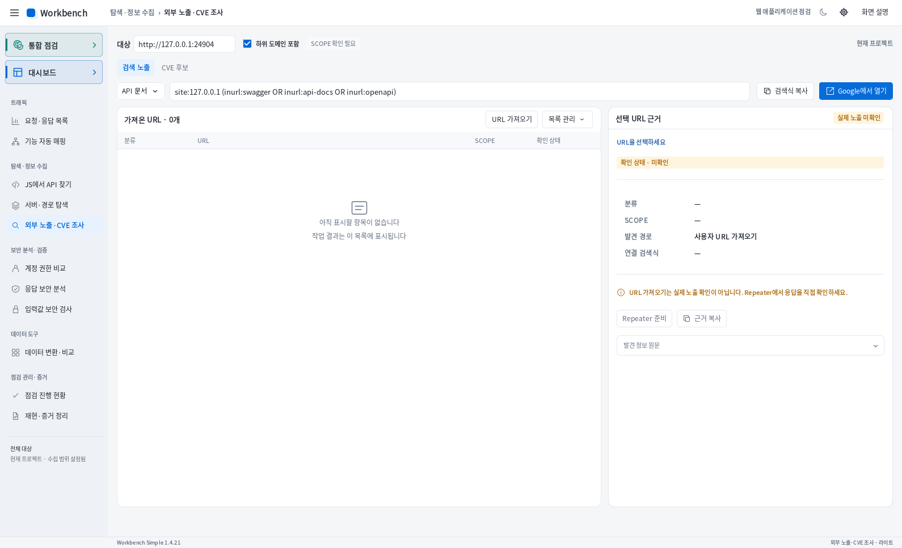
partial통합 점검COMPLETED · 전송 46 / 완료 응답 44대기 0 / 제외 119 / 실패 0 / 미확인 10관측·후보 finding 행 525개발견한 대기열 처리 완료 · 미확인 10건 · 전체 사이트 확인을 의미하지 않습니다.발견 대기열 처리가 끝났다는 뜻입니다. 525개는 확정 취약점 수가 아니고 미확인 10개를 포함합니다. native Katana는 초기 설정 제약으로 미실행입니다.scope-inspection.json · README_KR.md실제 결과 화면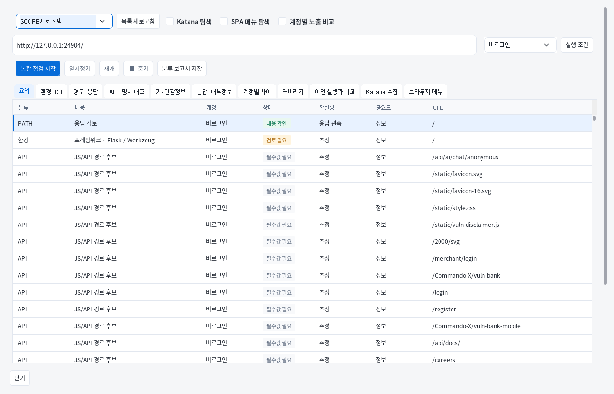
executed대시보드같은 실행 0784c671의 현재 결과 표시snapshot pages 46 / finding 행 525통합 점검과 동일 runId 확인스냅샷 페이지, 완료 응답, 전송 횟수는 서로 다른 집계입니다. 대시보드 표시만으로 취약점이 확정되지 않습니다.dashboard.json · scope-inspection.json실제 결과 화면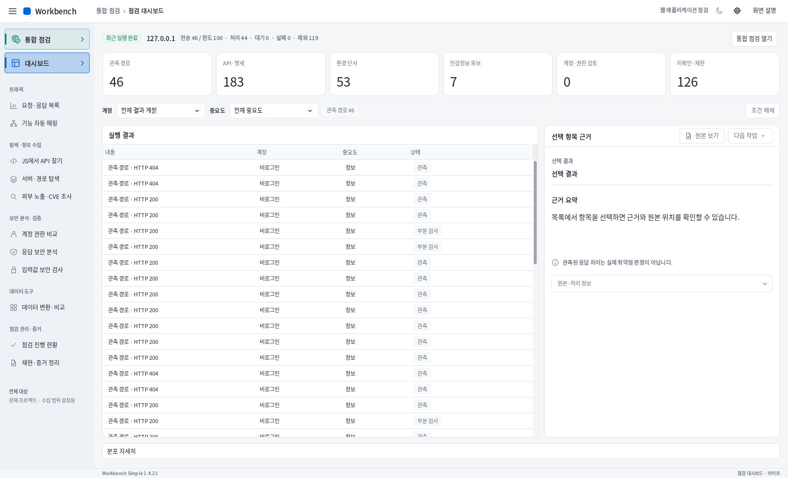